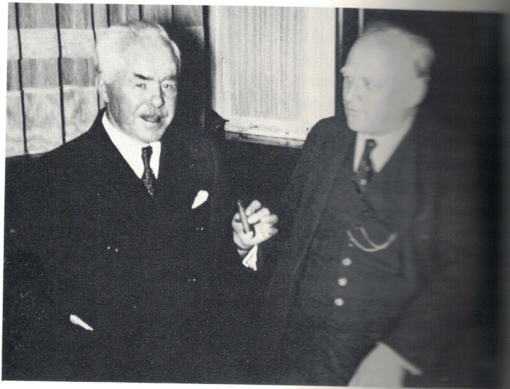

Karl Ludwig (Charles) Nessler and Josef Mayer were innovators in electrically heated permanent waving. Their systems competed in the marketplace, but the historical record also documents a personal relationship: an early Frankfurt connection and a photographed meeting in Berlin in 1939.
Two historical figures


Karl Ludwig Nessler (1872–1951) is associated with the early electrically heated permanent-wave system and its public demonstration in London in 1906. His work belongs to an earlier phase of the technology, with spiral winding, heat and chemical treatment central to the historical discussion.
Josef Mayer is documented in the supplied United States patent records as an inventor based in Karlsbad (today Karlovy Vary). His 1927 patent describes an appliance specifically designed to apply heat to a flat-wound strand of hair. A separate patent lineage, represented here by the 1933 reissue, sets out a hair-waving method involving clamps, winding, protective layers and heat.
Why the winding method matters
Permanent waving required a way to hold hair in a chosen shape while chemical preparation and heat acted on it. Earlier spiral arrangements and later flat-strand winding created different practical constraints for the equipment. The distinction is not merely a matter of fashion: the geometry of the wound strand affects how a heater can be fitted around it.
| Point of comparison | Nessler’s early system | Mayer’s documented patent solutions |
|---|---|---|
| Historical context | Early electrically heated permanent waving; London demonstration in 1906 | Patent applications and claims from the 1920s, with later reissue in 1933 |
| Winding principle | Early spiral winding, with hair arranged around a rod | Flat strands wound from their free ends toward the scalp, as described in the patent documents |
| Heating problem | Delivering heat to wound hair in the early system | Applying a heater laterally around a flat-wound curler without obstruction from the strand leading to the scalp |
| Primary documents reproduced here | Original Nessler patents require separate, individual comparison | US 1,619,794 (1927) and US Re. 18,841 (1933) |
What Mayer’s original drawings show


US 1,619,794: the heating appliance
In the 1927 specification, Mayer explains that a sleeve-shaped heater suitable for certain earlier arrangements cannot simply be slid lengthwise over a flat-wound strand. His solution uses two electrically heated, half-cylindrical members on scissor-like handles. They open so the device can be placed from the side around the wrapped hair. The patent also discusses insulating strips, electrical connections and heat distribution. This is an appliance patent: it does not, by itself, establish the date of every practical flat-winding technique.
US Re. 18,841: the hair-waving method
The reissued patent documents the preparation and treatment of a flat strand: clamps near the scalp, winding on a rod, absorbent material with a treating solution, moisture-retaining coverings and the application of heat. Its lineage runs through original US 1,622,957 and earlier reissue proceedings. It is not a reissue of US 1,619,794. The supplied document also includes a 1938 disclaimer concerning claim 6, an important detail when evaluating the later legal record.
For a step-by-step explanation, see How flat winding worked; for every page of the original documents, see Mayer’s patents.
Machines, publicity and professional networks


The patents document disclosed technical solutions. Advertisements, photographs and diplomas reveal how systems were promoted and presented to hairdressers. These are complementary types of evidence, not interchangeable proof of invention, manufacture or personal influence. Explore the Mayer Realistic company history and the historical documents for further material.
From Frankfurt to Berlin: a documented personal connection
The relationship between Karl Ludwig (Charles) Nessler and Josef Mayer was not merely a parallel chapter in the development of permanent waving. Historical accounts describe a professional acquaintance dating back to Frankfurt and a later personal meeting in Berlin.
Frankfurt am Main, 1910: early professional contact
A contemporary account attributed to Josef Mayer in the Neue Wiener Friseur-Zeitung (15 July 1910, no. 14, pp. 3–4) is an important lead for reconstructing their early contact in Frankfurt. The precise venue and whether this was their first personal meeting should be checked against the original article before being stated definitively; different salon names appear in secondary notes.
Berlin, 1939: Mayer travels to meet Nessler
Hans Lehmberg reports that, on hearing Nessler was staying in Berlin in 1939, Mayer travelled from Karlsbad to meet him. Mayer reportedly wrote numerous letters and hoped to bring together a gathering of the older generation of permanent-wave pioneers. Lehmberg does not establish whether such a wider gathering took place.

Lehmberg presents the photograph as a testimony to the professional fellowship of two competitors. He describes Mayer's difficulties competing with Nessler's powerful distribution organisation, while judging Mayer's later technical achievements favourably. These assessments are Lehmberg's retrospective interpretation, not independent proof of technical superiority. According to his account, the men respected one another and remained on friendly terms.
Lehmberg states that Nessler was 67 at the time of the Berlin meeting. The photograph and accompanying text therefore offer evidence for a late personal encounter, nearly three decades after their early professional contact.
Primary sources and further research
- Josef Mayer, US 1,619,794, Permanent-Hair-Waving Appliance, granted 1 March 1927. Full original PDF.
- Josef Mayer, US Re. 18,841, Hair Waving Method, reissued 30 May 1933; includes the disclaimer recorded in 1938. Full original PDF.
- Nessler research: Nessler-Dauerwelle historical documentation. Specific Nessler patent documents will need to be selected and compared individually before any detailed claim-by-claim comparison.
- Historical visual sources: images reproduced with permission of REALISTIC, a.s., Karlovy Vary, Czech Republic; individual dates and original publication references remain under review.
- Hans Lehmberg, Karl Ludwig Nessler und die Erfindung der Dauerwelle, 2nd ed. (Lenzkirch: Kadus-Haarkosmetik / Kadabell GmbH & Co. KG, 1986), pp. 86–87. Page 86 contains the photograph and account of the 1939 Berlin meeting.
- Neue Wiener Friseur-Zeitung, 15 July 1910, no. 14, pp. 3–4: reported contemporary account by Josef Mayer; original wording and venue to be verified before more detailed claims are made.
Editorial note: Patent descriptions and dates above are drawn from the two original documents reproduced on this website. Broader historical context is presented separately from the claims established by those patents.